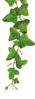
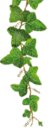

|  | Fragments In addition to the commonly cited quotations of Epicurus found among the Principal Doctrines and the Vatican Sayings, many others have been passed down to us from a variety of classical sources. This popular arrangement of 87 fragments follows the outline set forth by C. Bailey's 1926 collection—each translation is a consensus of several different editions. |
 | |
|
Contents:
Remains Assigned to Certain Books Concerning Choice and Avoidance 1) Freedom from trouble in the mind and from pain in the body are static pleasures, but joy and exultation are considered as active pleasures involving motion. Problems 2) Will the wise man do things that laws forbid, knowing that he will not be found out? A simple answer is not easy to find. The Shorter Summary, a.k.a. The Little Epitome 3) Prophecy does not exist, and even if it did exist, things that come to pass must be counted nothing to us. Against Theophrastus 4) But even apart form this argument I do not know how one should say that things in the dark have color.* Symposium 5) Polyaenus: "Do you, Epicurus, deny the existence of the warmth produced by wine?" Someone interrupted: "It does not appear that wine is unconditionally productive of heat." (And a little later:) "It seems that wine is unconditionally productive of heat, but wine of a certain quantity might be said to produce heat in a certain body." 6) Therefore we must not speak of wine as unconditionally productive of heat, but rather say that a certain quantity of wine will produce heat in a certain body which is in a certain disposition, or that a different quantity will produce cold in a different body. For in the compound body of wine there are certain particles out of which could might be produced, if, as need arises, united with different particles they could form a structure which could cause cold. So that those are deceived who say that wine is unconditionally heating or cooling. 7) Wine often enters the body without exerting any power either of heating or of cooling, but when the structure is disturbed and an atomic rearrangement takes place, the atoms which create heat at one time come together and by their number give heat and inflammation to the body, at anther they retire and so cool it. 8) Sexual intercourse has never benefited a man, and he is lucky if it has not harmed him. 9) It is strange indeed that you were not at all impeded by your youth, as you would say yourself, from attaining, young as you were, a distinction in the art of rhetoric far above all you contemporaries, even the experienced an famous. It is strange indeed, I say, that you were not at all impeded by your youth from winning distinction in the art of rhetoric, which seems to require much practice and habituation, whereas youth can be an impediment to the understanding of the true nature of the world, towards which knowledge might seem to contribute more than practice and habituation. On the Goal of Life 10) I do not know how I can conceive the good, if I withdraw the pleasures of taste, withdraw the pleasures of love, withdraw the pleasures of hearing, and withdraw the pleasurable emotions caused by the sight of a beautiful form. 11) The stable condition of well-being in the body and the sure hope of its continuance holds the fullest and surest joy for those who can rightly calculate it. 12) Beauty and virtue and the like are to be honored, if they give pleasure; but if they do not give pleasure, we must bid them farewell. On Nature
13) The nature of the universe consists of bodies and void. 14) The nature of all existing things is bodies and space.
15) For if it [the sun] had lost its size through the distance, much more would it have lost its color: for there is no other distance better adapted for such loss than that of the sun. From Uncertain Works 16) The atom is a hard body free from any admixture of void; the void is intangible existence. 17) Away with them all: for he [Nausiphanes], like many another slave, exerted himself with that sophistic boasting. 18) If they have this in mind, they are victorious over the evils of want and poverty. 19) Even if war comes, he would not count it terrible, if the gods are propitious. He has led and will lead a pure life in Matro’s company, by favor of the gods. 20) Tell me, Polyaenus, do you know what has been a great joy to us? Letters to Several Persons
21) This drove him [Nausiphanes] to such a state of fury that he abused me and ironically called me Master. 22) I suppose that those grumblers will believe me to be a disciple of The Mollusk [Nausiphanes] and to have listened to his teaching in company with a few hard-drinking youths. For indeed the fellow was a bad man and his habits, as such, could never lead to wisdom. Letters to Individuals
23) I summon you to continuous pleasures and not to vain and empty virtues which have but a desperate hope for rewards.
24) I congratulate you, Apelles, in that you have approached philosophy free from all corruption.
25) If you two don’t come to me, I am capable of being persuade to rush on my own to wherever you and Themista summon me.
26) Send us therefore offerings for the sustenance of your sacred body on behalf of yourself and your children: this is how it occurs to me to put it. 27) Oh thou, who from youth has regarded all my prompting as sweet. 28) If you wish to make Pythocles rich, do not give him more money, but diminish his desire. 29) We think highly of frugality not that we may always keep to a cheap and simple diet, but as a means to keep us free from hunger. 30) On this truly happy day of my life, while at the point of death, I write this to you. The disease in my bladder and stomach are pursuing their course, lacking nothing of their natural severity: but against all this is the joy in my heart at the recollection of my conversations with you. Do you, as I might expect form your devotion from boy hood to me and to philosophy, take good care of the children of Metrodorus.
31) In your feeling of reverence for what I was then saying you were seized with an unaccountable desire to embrace me and clasp my knees and show me all the signs of homage paid by men in prayers and supplications to others; so you made me return all these proofs of veneration and respect to you. Go on thy way as immortal and think of us too as immortal.
32) Lord and Savior, my dearest Leontion, what a hurrahing you drew from us, when we read aloud your dear letter.
33) Launch your boat, oh blessed youth, and flee at full speed from every form of culture. 34) I shall sit down and await your lovely and godlike appearance. Letters to Uncertain Persons
35) We have arrived at Lampsacus safe and sound—Pythocles, Hermarchus, Ctesippus and I—and there we found Themista and our other friends all well. I hope you too are well and your mamma, and that you are always obedient to Papa and Matro, as you used to be. Let me tell you that the reason that I and all the rest of us love you is that you are always obedient to them.
36) A week before writing this, the stoppage became complete and I suffered pains such as bring men to their last day. If anything happens to me, do you look after the children of Metrodorus for four or five years, but do not sped any more on them than you now spend each year on me.
37) I am thrilled with pleasure in the body, when I live on bread and water, and I spit upon luxurious pleasures not for their own sake, but because of the inconveniences that follow them. 38) As I told you when you were going away, take care also of his brother Apollodorus. He is not a bad boy, but causes me anxiety, when he does what he does not mean to do. 39) Send me a pot of cheese, so that I may have a feast when I care to. 40) You have looked after me wonderfully generously in sending me food, and have given proofs heaven-high of your good will to me. 41) The only contribution I require is that which … ordered the disciples to send me, even if they are among the Hyperboreans. I wish to receive from each of you two hundred and twenty drachmae a year and no more. 42) He shall realize a valuable return in the instruction which I have given him. 43) I never desired to please the rabble. What pleased them, I did not learn; and what I knew was far removed from their understanding. 44) Do not think it unnatural that when the flesh cries out, the soul cries too. The flesh cries out to be saved from hunger, thirst, and cold. It is hard for the soul to repress these cries, and dangerous for it to disregard nature’s summons, because the soul accustomed to independence day by day. 45) The man who follows nature and not groundless opinions is independent of all things. For in reference to what is enough for nature, every possession is riches—but in reference to unlimited desires, even the greatest wealth [is not riches but poverty]. 46) Your anxiety is directly proportional to your forgetfulness of nature, for you bring on yourself unlimited fears and desires. 47) = Vatican Saying XIV 48) It is better for you to be free of fear lying upon a bed of straw, than to have a golden couch and a lavish table and be full of trouble. 49) … remembering your letter and your discussion about the men who are not able to see the analogy between phenomena and the unseen nor the harmony which exists between sensations and the unseen and again the contradiction… 50. Sweet is the memory of a deceased friend. 51) Do not avoid conferring small favors: for then you will likewise seem to be open to conferring great things. 52) If your enemy makes a request to you, do not scorn his request; but keep on your guard; for he is like a dog. 53) = Vatican Saying 54
Fragments from Uncertain Sources On Philosophy 54) Vain is the word of a philosopher which does not heal any suffering of man. For just as there is no profit in medicine if it does not expel the diseases of the body, so there is no profit in philosophy either, if it does not expel the suffering of the mind. Physics 55) Nothing new happens in the universe, as compared to the infinite span of time that has already passed. 56) We shall not be considering them [the gods] any happier or less destructible, if we think of them as neither speaking nor conversing with one another, but resembling dumb men. 57) Let us at least offer pious and noble sacrifices where it is customary, and let us do all things lawfully while not troubling ourselves with common beliefs about what concerns the noblest and holiest of beings. Further, let us be free of any care in regard to their opinion. Thus, one may live in conformity with nature… 58) If the gods listened to the prayers of men, all men would quickly have perished: for they are always praying for evil against one another. Ethics 59) The beginning and the root of all good is the pleasure of the stomach; even wisdom and culture must be referred to this. 60) We have need of pleasure when we suffer pain because of pleasure's absence; but when we are not feeling such pain, though we are in a condition of sensation, we have no need of pleasure. For the pleasure which arises from nature does not produce wickedness, but rather the longing connected with vain fancies. 61) That which creates insuperable joy is the complete removal of a great evil. And this is the nature of good, if one can once grasp it rightly and then hold by it, rather than walking about tediously babbling about the good.** 62) It is better to endure particular pains which produce greater satisfactions that we may enjoy. It is well to abstain from particular pleasures which produce more severe pains so that we may not suffer them. 63) Let us not blame the flesh as the cause of great evils, nor blame fate for our distresses. 64) Great pains will quickly put an end to life; but chronic pains are not severe. 65. Excessive pain will send you to death. 66) Through love of true philosophy, every troublesome and disturbing desire is ended. 67) Thanks be to blessed Nature because she has made what is necessary easy to supply, and what is not easy unnecessary. 68) It is common to find a man poor in determining the natural end of life but rich with empty fancies. For no fool is satisfied with what he has, but is distressed for what he has not. Just as men with a fever, through the malignancy of their disease, are always thirsty and desire the most injurious things, so too those whose mind is in an evil state are always poor in everything and in their greed are plunged into capricious desires. 69) Nothing satisfies the man who is not satisfied with a little. 70) Self-sufficiency is the greatest of all wealth. 71) Most men fear frugality and through their fear are led to actions most likely to produce fear. 72) Many men when they have acquired riches have not found the escape from their ills but have only exchanged them for greater ills. 73) By means of occupations worthy of a beast, abundance of riches is heaped up, but a miserable life results. 74) Unhappiness comes either through fear or through vain and unbridled desire: but if a man curbs these, he can win for himself the blessedness of wisdom. 75) It is not deprivation of these things which is the source of pain; such unnecessary suffering arises from vain fancies. 76) The crude soul is puffed up by prosperity and cast down by misfortune. 77) Nature teaches us to pay little heed to what fortune brings, and when we are prosperous to understand that we are unfortunate, and when we are unfortunate not to regard prosperity highly, and to receive unemotionally the good things which come from fortune and to range ourselves boldly against the seeming evils which it brings: for all that the many regard as good or evil is fleeting, and wisdom has nothing in common with fortune. 78) He who least needs tomorrow, will most gladly greet tomorrow. 79) I spit upon the beautiful and those who vainly admire it, when it does not produce any pleasure. 80) The greatest fruit of justice is peace of mind. 81) Laws are made for the sake of the wise, not to prevent them from inflicting wrong but to secure them from suffering it. 82) Even if they [wrongdoers] are able to escape punishment, it is impossible to win security by escaping: and so the fear of the future which always presses upon them does not suffer them to be happy or to be free from anxiety in the present. 83) The man who has attained the natural end of the human race will be equally good, even when no one else is present. 84) A man who causes fear cannot be free from fear. 85. Happiness and blessedness do not correlate with abundance of riches, exalted positions, or offices or power, but with freedom from pain and gentleness of feeling and a state of mind that sets limits that are in accordance with nature. 86) Live in anonymity. [Lathe biosas.] 87) We must say how best a man will maintain the natural end of life, and how one will not willingly at first pursue public office. Footnotes * Cf. Lucretius, II.730 ** This is perhaps a snub directed against the school of Aristotle: the Peripatetics, so called because they disputed questions while walking about the Lyceum at Athens.
|